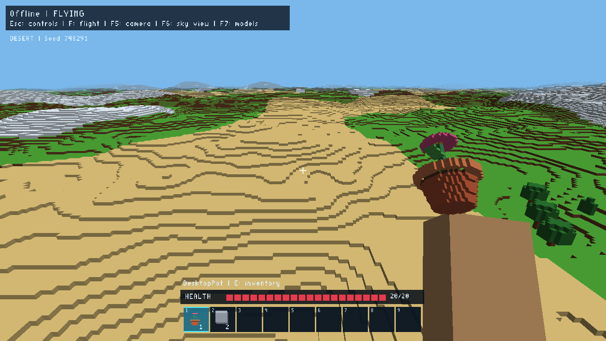
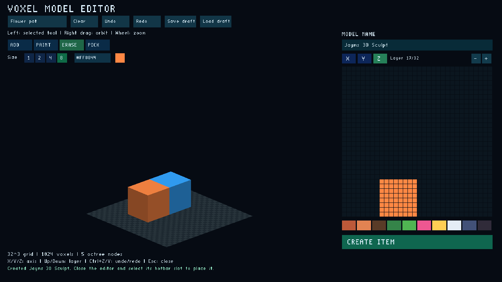

Explore together
Walk, jump or fly through plains, forests, deserts and snowy mountains. The multiplayer server shares edits and saves your inventory between sessions.
A world built from voxels
Explore seeded biomes with friends. Craft smaller building blocks, fly above the terrain, and turn your own tiny voxel models into objects you can place in the world.

Walk, jump or fly through plains, forests, deserts and snowy mountains. The multiplayer server shares edits and saves your inventory between sessions.
Cut materials into half, quarter, eighth or sixteenth cubes. Use precise shapes for constructions and combine the pieces again through crafting.
Sculpt coloured voxel models in 3D, from a tiny flower pot to a custom decoration. Publish a model as an item and place it in the shared world.
From an idea to an item
Add, paint, erase or pick colours directly on the model. Rotate the workspace, choose a brush size, and use any RGB colour. The layer editor stays available for precise slices.
Learn the model editor
Voxel One is an active playtest. See what is complete, what is being built, and the evidence behind each change.